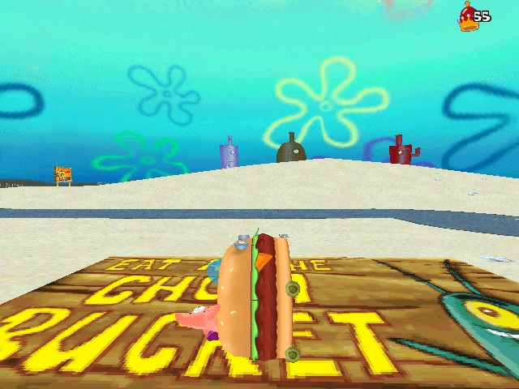
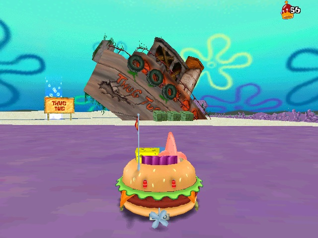
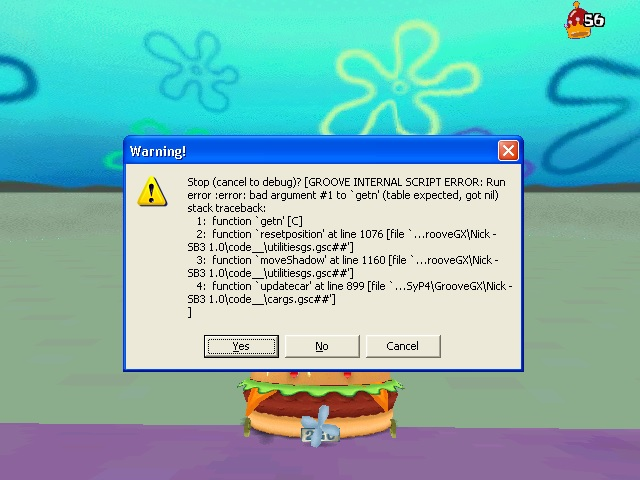

The Internet is Serious Business!
Home > Video Games > PC > The SpongeBob SquarePants Movie 3D Game
Note that I am not referring here to the much more well-known game with a very similar title, which, like this one, was also based on the first SpongeBob SquarePants movie; rather, I am referring to a far more obscure title that was released only for Microsoft Windows. The game I am discussing here is an open-world driving game in which you control SpongeBob and Patrick in the Patty Wagon; it contains an in-game Bikini Bottom that can be explored, as well as a handful of mini-games. Sadly, my memory has much faded, and today I can no longer remember with much assurance when I first discovered the game, or on what site; with regard to the former it was probably sometime in 2006, or even as early as 2005, and as for the latter, it was most likely Nick.com. Apparently, the game was developed in Adobe Shockwave, which makes sense, as I have somewhat clear memories of the playing it embedded in my Web browser (which was Internet Explorer 6, of course!), and also, I recall, of navigating to the same specific Web site each time I wanted to access it.
This game does not have a true goal or final objective, though back in the day I was definitely motivated by the desire to collect crowns in order to increase my in-game score. I remember also taking great pleasure in simply driving around the in-game Bikini Bottom, as well as in playing the mini-games, though I definitely preferred the former.
Besides collecting crowns, driving around, and playing the mini-games, another thing which I very much enjoyed was messing around with the game's mechanics. The game's physics engine has many oddities and rough edges, and oftentimes simply bumping the Patty Wagon into something would cause it to react in surprising and amusing ways; this, combined with the funny remarks that SpongeBob and Patrick would always utter when the Patty Wagon touched anything, always made me laugh and kept me entertained. In particular, I remember that if you knocked down one of the Chum Bucket signs and then proceeded to drive over it, the Patty Wagon would magically rotate 90 degrees upwards:

By far the game's most serious bug, though, was the one that caused it to crash when you drove outside the boundaries of the map. I stumbled upon it one day by chance while I was driving around and exploring, and, upon reaching the Thug Tug, decided to drive off the bow of the ship for fun. I did this multiple times, and in one instance, I actually launched the Patty Wagon so far into the air that it flew over the solid barrier that enclosed the intended drivable section of the game world, and landed in the normally inaccessible purple zone surrounding it:

I then proceeded to drive around the purple area, the entire time believing myself quite clever to have discovered a glitch within the game, before finally noticing a gray area outside of it, heading towards that, and then suddenly finding myself looking at an error message:

After I learned of the existence of this bug, the game actually became more entertaining in my eyes, and sometimes, when I was bored, I would deliberately drive into the gray area and crash it just for fun, each time deriving much amusement from the act.
I returned to playing The SpongeBob SquarePants Movie 3D Game a few times during the mid-2000s, but eventually I did grow bored of it, with 2007 probably being the last year of the 2000s during which I played it. For a game of its relative simplicity and crudeness it managed to keep me occupied for a surprisingly long time: I can recall with some haziness that, by the time I lost interest in this game and stopped playing it, I had accumulated something like a few thousand crowns. Although it wasn't the first game with 3D graphics that I played entirely in my Web browser (that distinction belongs to RuneScape), it was still one of the first, and the simple novelty of such an experience at the time was sufficient to hold my interest. It was also one of the first open-world video games I ever played, and though the in-game Bikini Bottom was admittedly very small and limited, exploring it was, for me as a kid in those days, nevertheless a very enjoyable and relaxing experience.
For those interested, the entire game (which is contained in a single small executable file and requires no installation) may be downloaded from the Internet Archive. (Contrary to the description provided, however, I can confirm that, in fact, it is not possible to play as Squidward, nor is there any such family mode
.)


 All written materials on this Web site are my own, and all are released under the Do What the Fuck You Want to Public License Version 2.
All written materials on this Web site are my own, and all are released under the Do What the Fuck You Want to Public License Version 2.
This page last modified on 16 April 2021.